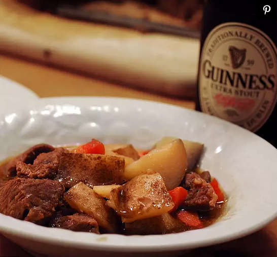

Irish Beef Stew

Description
Preparation:20 mins
Cook:2 hrs 10 mins
Total:2 hrs 30 mins
Servings:8
Ingredients
- 2 tablespoons olive oil
- 1 onion, chopped
- 3 cloves garlic, minced
- 1 teaspoon salt
- ½ teaspoon ground black pepper
- 2 pounds beef stew meat, cubed
- 3 cups stout beer (such as Guinness®)
- 2 potatoes, peeled and sliced
- 2 potatoes, peeled and quartered
- salt and ground black pepper to taste
Steps
- Heat the olive oil in a large pot over medium heat. Stir in the onion, garlic, salt, and pepper.
- Cook and stir until the onion has softened and turned translucent, about 5 minutes. Stir in the beef, beer, sliced potatoes, and quartered potatoes.
- IBring to a boil over high heat, then reduce heat to medium-low, cover, and simmer until the beef is tender, about 2 hours.
- Season to taste with salt and pepper before serving.